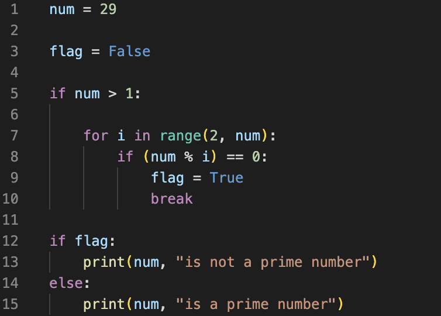
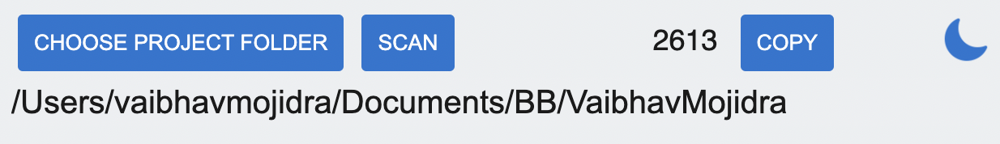
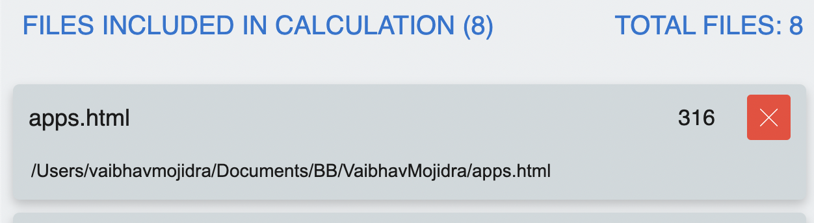
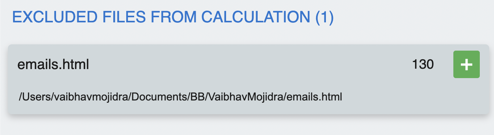

This software allows you to count the lines of code in your project/app. Even while it can be done in one click, eliminating the tedious task of manually counting the lines of each file by opening one by one, we nevertheless recommend that users verify the following before selecting the project folder for scan:
To begin with, while there is no harm in using the original project folder, we strongly advise you to create a local copy of the original project folder.
When calculating the lines of code, we use the following criteria:
1. The following file extensions will be excluded from the scanning process: .pdf, .png, .jpg, .jpeg, .gif, .mp4, .mov, and .svg.
2. It will also exclude hidden files and folders, for example, .git folder.
3. It will exclude the .DS_Store file, which is found in the majority of Mac OS directories.
4. Finally, count code excluding the empty-lines for example in below code you can see there are 15 lines but there are 4 empty lines (line 2, 4, 6 & 11) in those 15 lines that means the lines of code is 11 lines so scan will count 11 lines for this code.
Assuming you created a copy of the original folder, we recommend that you make certain changes to the copied folder before scanning it.
This is completely optional, but many projects have a large library/dependency folder that we shouldn't count lines of code in, for example, the node_modules folder. It's a good idea to delete such folders/files from the copy folder (copy of the original project folder) before scanning (if not it will be also included in scan).
1. Choose the copy of project folder/project folder by clicking CHOOSE PROJECT FOLDER button or using shortcuts ⌘+O (for Mac OS) and CTRL+O (for non-Mac OS).
2. A path will be shown below CHOOSE PROJECT FOLDER button recheck that path for confirming and click SCAN button or using shortcuts ⌘+S (for Mac OS) and CTRL+S (for non-Mac OS).
It might take some time to scan based on your processor and number of files.
3. Result will be shown below you can see the total count prior to COPY button or using shortcuts ⌘+C (for Mac OS) and CTRL+C (for non-Mac OS).
4. You can use the COPY button to copy the count however you can review the files in result and can exclude/include files in result and it will instantly update count NO NEED TO RE-SCAN IT.
 5. You will get individual line count for each with path and file name to review. You can modifiy and according get instant count in result. REMEMBER DO NOT RE-SCAN IT
Additionally you can switch between dark and light mode. By default it will be dark mode. Shortcuts ⌘+M (for Mac OS) and CTRL+M (for non-Mac OS).